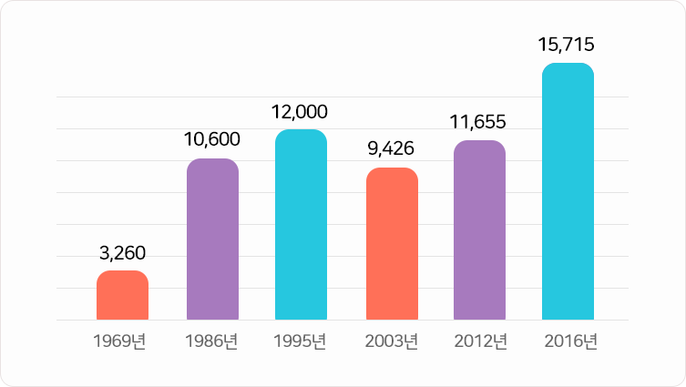
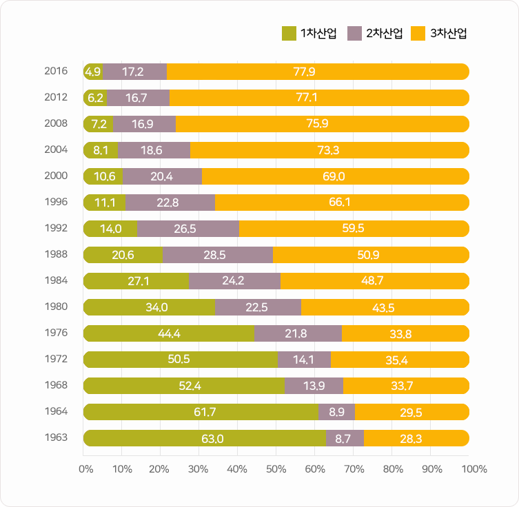

미래 사회의 직업
-
직업세계
이해- 직업을 구분하는 기준
- 우리나라 직업 개수의 변화
- 다른 나라의 직업 개수
-
우리나라
일자리 변화- 우리나라 산업별 일자리 변화
- 우리나라 시대별 일자리 변화
-
미래 변화
예상하기- 글로벌 경제
- 인구구조의 변화
- 기후변화와 에너지 부족
- 과학기술의 발전
-
미래 직업
세계 준비- 변화하는 미래사회 대비
- 미래를 준비하기 위한
7가지 능력
직업은 실제로 하는 일의 성격과
종사자어떤 일을 직업으로서 하는 사람 수를 기준으로 일자리를
나누어요.
종사자어떤 일을 직업으로서 하는 사람 수를 기준으로 일자리를
나누어요.
직업세계 이해
먼저, 직업을 구분하는 기준을 알아볼까요?
국가별로 직업을 분류하는 내용이 약간씩 다른데, 세계적인 기준은
스위스 제네바에 있는 ‘국제노동기구(ILO)’에서 만들어요.
우리나라의 표준은 세계기준을 바탕으로 우리 상황에 맞도록 통계청에서 다시 나누고 있어요.
아래 카드를 클릭하여, 직업을 구분하는 대표적인 사례를 확인해보세요.
-
관리자관리자 대통령과 같이 선출되어 일을 하거나,
다른 사람의 업무를 관리하고 감독해요. 예) 대통령, 사장 등 -
전문가 및 관련 종사자전문가 및 관련 종사자 전문지식과 경험을 바탕으로 해당 분야의 연구,
지도와 분석하는 활동을 주로해요. 예) 과학자, 의사, 교사 등 -
사무 종사자사무 종사자 업무와 관련된 정보를 기록, 보관하고
계산 및 검색과 같은 사무적인 활동을 해요. 예) 은행원, 비서 등 -
서비스 종사자서비스 종사자 음식제공, 머리 손질이나 공공안전 등
사람들에게 서비스를 제공해요. 예) 경찰관, 미용사, 요리사 등 -
판매 종사자판매 종사자 영업활동을 통해 물건이나
서비스를 판매하고 상품을 홍보해요. 예) 판매원, 보험설계사 등 -
농립, 어업 숙련어떤 일이나 기술을 능숙하게 익힘 종사자농림어업 숙련 종사자 농작물, 동물과 물고기를 키우고
숲을 관리하는 활동을 해요. 예) 농부, 사육사, 해녀 등 -
기능원 및 기능 종사자기능원 및 기능 종사자 주로 손과 공구를 사용하여 목재나 금속 등을
가공하고 공예제품을 만들어요. 예) 목수, 자동차 정비원 등 -
장치, 기계조작 및 조립 종사자장치, 기계 조작 및 조립 종사자 기계를 조정하거나 조작하고
제품을 조립하거나 운전하는 업무를 해요. 예) 기관사, 항공기 조립원 등 -
단순노무 종사자단순노무 종사자 일을 할 때 단순한 도구를 사용하거나
상당한 힘을 필요로 하는 활동을 담당해요. 예) 우편집배원, 청소원 등
*자료: 한국표준직업분류, 통계청(2017)
세부적인 직업 수는
‘한국직업사전’을 바탕으로 하는
데, 분류 기준의 변화에 따라
달라지고 있어요.
‘한국직업사전’을 바탕으로 하는
데, 분류 기준의 변화에 따라
달라지고 있어요.
*2003년에는 이전과 다르게 직무직업으로 맡은 일
의 범위를 크게 잡아 직업의 개수가 줄어
들었지만 이후 다시 늘어나고 있어요.
직업세계 이해
그럼, 우리나라 직업의 개수는 어떻게 변해왔을까요?

1969년 3,260 개
1986년 10,600 개
1995년 12,000 개
2003년 9,426 개
2012년 11,655 개
2016년 15,715 개
여러분은 이 중에 몇 개의 직업을 알고 있나요?
*자료 : 한국직업사전, 한국고용정보원(2012&2016)
산업이 발전하고 나라의 규모가
커질수록 직업의 수도 많아진다
고 해요.
커질수록 직업의 수도 많아진다
고 해요.
직업세계 이해
또, 다른 나라의 직업 개수는 얼마나 될까요?
-
한국
15,175개
-
일본
16,433개
-
미국
30,645개
지난 50년간 우리나라의
산업별 일자리를 보면 농립, 어업
(1차 산업) 종사자는 크게 줄고,
제조업(2차 산업)과 특히 서비스업
(3차 산업) 종사자 비율은 크게
늘었어요.
그리고 이런 현상은 앞으로도
계속될 거에요.
산업별 일자리를 보면 농립, 어업
(1차 산업) 종사자는 크게 줄고,
제조업(2차 산업)과 특히 서비스업
(3차 산업) 종사자 비율은 크게
늘었어요.
그리고 이런 현상은 앞으로도
계속될 거에요.
우리나라 일자리 변화
우리나라의 산업별 일자리 변화

*자료 : 경제활동인구조사(http://kosis.kr), 통계청(1963-2016)
우리나라의 대표 직업은 어떻게
변화해왔을까요?
과거부터 지금까지 우리나라의
산업발전에 따라 직업 특성은
꾸준히 변화하고 있어요.
그리고 시대를 대표하는 직업도
그런 특징에 따라서 달라지고
있어요.
변화해왔을까요?
과거부터 지금까지 우리나라의
산업발전에 따라 직업 특성은
꾸준히 변화하고 있어요.
그리고 시대를 대표하는 직업도
그런 특징에 따라서 달라지고
있어요.
우리나라 일자리 변화
우리나라 시대별 일자리 변화
-
1950년대
농어민 시대 농민, 어민, 물장수, 얼음장수, 전차운전사, 은행원, 교사,
전화교환수, 군인, 경찰, 단순노무자, 간호사, 숯쟁이, 굴뚝청소원,
라디오 조립원 등 -
1960년대
기능공, 공장노동자 시대 전기전자기술자, 섬유기능공, 신발기능공, 사무직종사자,
스튜어디스, 은행원, 공무원, 탤런트, TV조립원 등 -
1970년대
건설노동자, 은행원 시대 공작기계제조원, 건설현장노동자, 대기업직원, 금융권 종사자,
중장비엔지니어, 버스안내양 등 -
1980년대
화이트칼라사무직으로 일하는 회사원 등을 가리키는 말, 유통업 시대 컴퓨터 관련직업, 반도체 기술자, 광고관련 직업, 프로듀서,
증권사직원, 속기사, 운동선수 등 -
1990년대
전문직종 시대 금융전문가, 웹마스터, 웹디자이너, 인터넷방송기획자,
전자상거래전문가, 벤처기업가 등 -
2000년대
디지털, 글로벌 전문가 시대 금융전문가, 통신네트워크 전문가, 국제공인회계사,
국제회의전문가, 유전자감식전문가, 환경전문가, 사회복지사 등
*자료 : 한국 직업변천사의 시대별 특성 비교분석에 관한 탐색적 연구
(한국경영사학회 52권 PP.79-109 수정), 이종구, 조은상, 김홍유(2009)